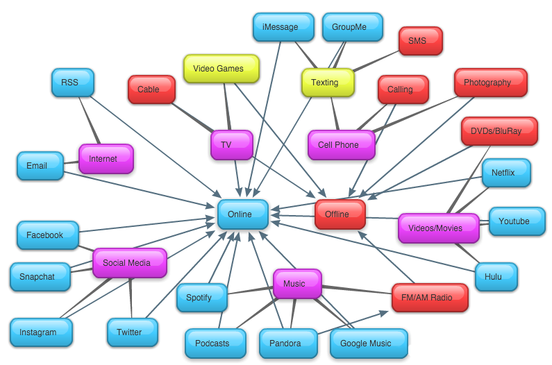

When looking through my classmate's websites and considering the media they had listed, I quickly found that I was able to separate nearly all media into two categories: online and offline. Most students had very similar established groups of media (ex. TV, cell phone, music, social media, etc) but individual media within these groups would typically be either online or offline. In addition, I found that much of the media that was offline has an online equivalent or replacement. For example, even though FM/AM Radio would traditionally be considered offline, there are numerous online equivalents for that specific media, such as Spotify and Pandora. I believe we have seen a true shift over the last couple of decades, where nearly all media consumed by the average person is sourced by the internet. You can see the differences in online media vs. offline media below in the bubble web I created based on the web pages I looked at.
The chart below shows the relationships and links between media found on our class webpages. Purple bubbles are the groups of media. Blue bubbles are media that are found through an online platform. Red bubbles are media that can be found off of the Internet. Yellow bubbles are media that is in some way both offline and online.
